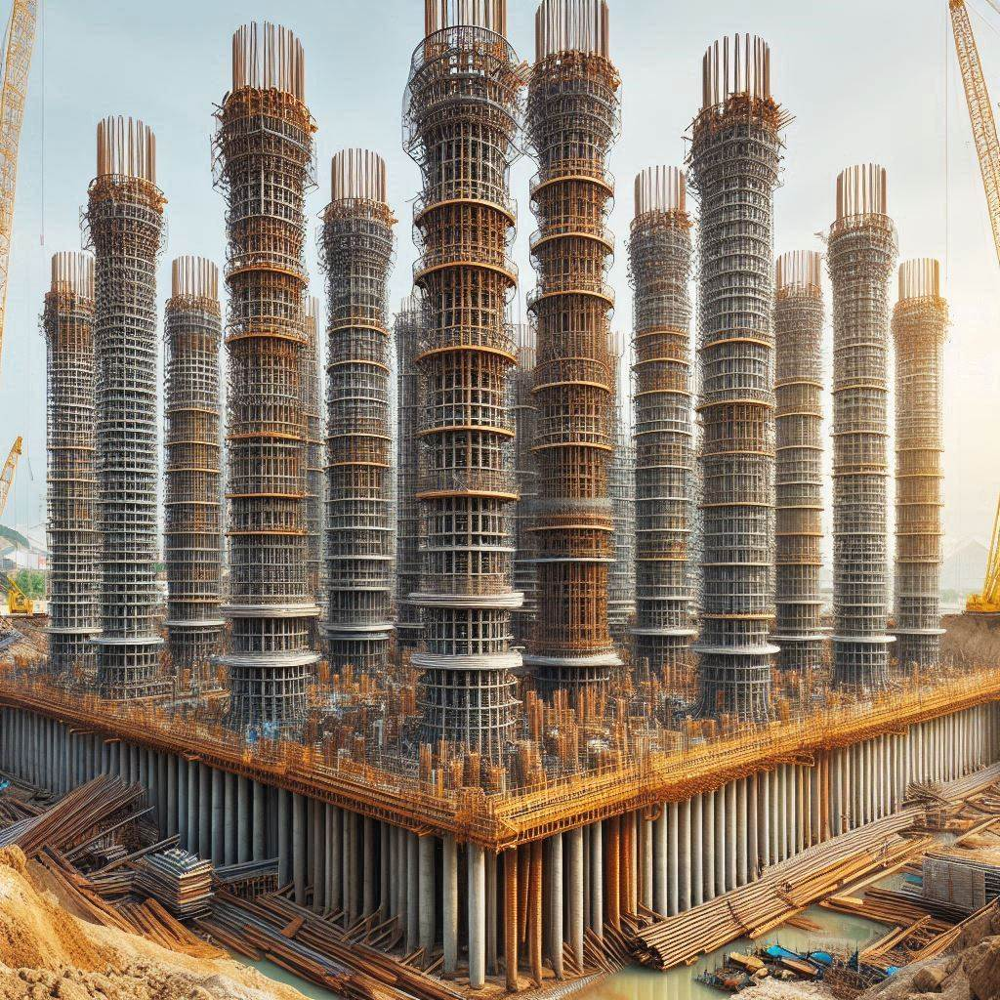

|
|
 | |
| 鑽掘式基樁 | 套管基樁 | 預壘樁 | 微型樁 |

在這次課程中，我首先了解了HTML的基本結構和標籤，這讓我能夠搭建一個簡單的網頁框架。
隨後，我通過插入基樁工程的相關圖片，使網頁內容更加生動和直觀。這些圖片不僅展示了基樁的施工過程，
還包括不同類型的基樁，如鑽掘式基樁、全套管基樁和微型樁。
接下來，我使用了有序列表（ol）來展示基樁工程的施工步驟。這種列表形式能夠清晰地表達每個步驟的先後順序和重要性
方便讀者理解整個施工流程。而無序列表（ul）則用於列出基樁工程的優缺點，這種方式簡潔明了，
便於信息的快速瀏覽和記憶。
總的來說，這次課程讓我不僅掌握了HTML的基本技術，也深刻體會到網頁製作的樂趣和挑戰。
通過將基樁工程這一專業知識與HTML技術相結合，我學會了如何將複雜的信息通過網頁進行有效地傳達。
這不僅提高了我的專業技能，還拓展了我的知識面，為未來的學習和工作奠定了堅實的基礎。